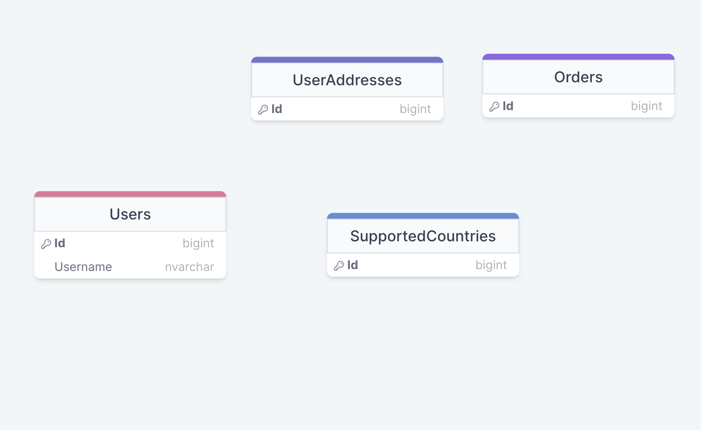
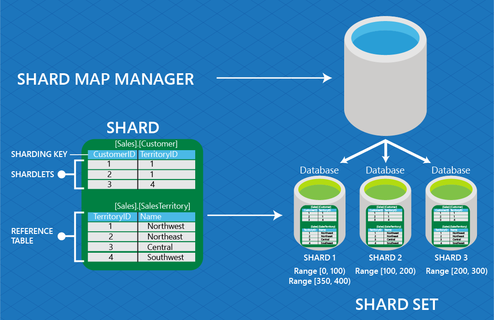

As developers, we use hash tables on a daily basis (directly or indirectly) because they are ubiquitous in software. Yet if you ask most developers, they would not be able to explain how they work, so why not provide a simple explanation here?
Let’s assume you have a list of users, and you want to show the details for a user based on username. Since lists are usually implemented as linked lists under the hood, finding the element means iterating through the whole list, which is an O(n) operation. This is different from accessing an array, which can be done by index. This is an O(1) operation. So what if we wanted to have something similar? We would need to store the usernames in an array under the hood, and somehow “convert” the username string to an index.
function stringToNormalizedNumber(str: string) {
// calculate the sum of character codes
const charCodeSum = str.split('').reduce((sum, char) => sum + char.charCodeAt(0), 0)
// combine string length and character code sum
const value = str.length + charCodeSum
// normalize to the range of 0 to 1, assuming 32-bit character codes
const normalizedRange = value / Math.pow(2, 32)
}We can come up with a checksum function, for example. This isn’t a great way to do it, but it will do, as an example.
So what we do is we calculate the index based on the string. You will notice that:
- There will be a lot of empty space in the array.
- There can be collisions, meaning that two different strings can have the same numeric index.
So what we do is instead of just storing a user at each point in an array, we can store a list of users with the same checksum (called a bucket). So when we access an element, we actually iterate through the list and check against the username. Normally you shouldn’t have more than a few items in the list anyway. The bigger the array used, the smaller the chance of a collision, but obviously the more memory will be needed.

In ideal circumstances, the size of the array would be infinite, and access time would be O(1), but that’s not realistic. What we have is a tradeoff between access time and space.
Caching / Materialized Views
The simplest example of space versus execution time tradeoff that you’ll routinely encounter is caching. While a “dumb” cache can be easy to implement, cache invalidation is by no means a simple problem, so a common issue is out-of-date data.
An alternative to caching are materialized views, which is also a tradeoff. Imagine you have a complex query that is computationally expensive, and an application that is read heavy (say 100:1 read to write ratio). An interesting thing about materialized queries is they denormalize the data, which also means data duplication in itself. Let’s consider a very simple example, we have users and each user can define a set of addresses to which they can make orders online, in an online store.
A cross join between them results in data duplication.
|ORDER |asdas |asdasd |
|asdasda sd |asdasd | | Sharded Databases Also Require Data Duplication
Sharding spreads your database horizontally over a number of nodes, along some dimension. In the above case, we could spread requests to nodes by user id. A very simple strategy would be to say that first node handles requests for user id in range [1, 1000], the second in range from [1001, 2000] and so on. Of course, some users can have more orders than others, etc. which leads to hotspots, so using an equal number of users per node isn’t the optimal strategy.
A slightly more advanced technique (like what Azure uses) is to use a shard map manager, but this is beyond the point of this article.
With sharding, you have two types of tables:
- Sharded tables
- Replicated tables
Also, each node has the same schema, and FK constraints are kept intact. So User, UserAddress and UserOrder will be sharded , while the SupportedCountries will be replicated. Again, this is a form of data duplication, and it’s a price we play
Clustered Indexes Are A Form Of Materialized Views
A common approach to fix read performance issues is to add.